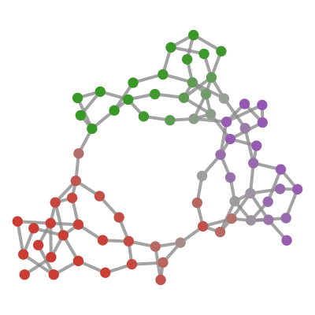
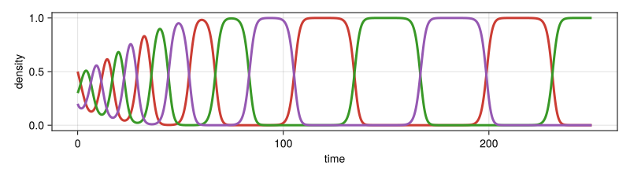
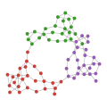
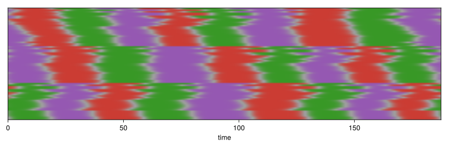

Cyclic Competition (the Logo)
This example builds the animated NetworkDynamics.jl logo: a network of three loosely coupled areas that take turns showing the three Julia colors. This example can be downloaded as a normal Julia script here.

The idea is to show the three Julia colors taking turns. For that we need a dynamical system with three populations where one of them is dominant at all times, and where the dominance switches rather quickly from one to the next.
using NetworkDynamics
using Graphs
using OrdinaryDiffEqTsit5
using StableRNGs
using CairoMakie
using GraphMakieA Single Node: May–Leonard Competition
The classic model for this is the three-species competition of May and Leonard:
May, R. M., & Leonard, W. J. (1975). Nonlinear aspects of competition between three species. SIAM Journal on Applied Mathematics, 29(2), 243-253.
With the densities $x = (r, g, p)$ of the red, green and purple species, each species grows logistically but is suppressed by the other two, weakly by its prey and strongly by its predator:
\[\begin{aligned} \dot r &= r\,(1 - r - α\,p - β\,g) + ε + Φ_r\\ \dot g &= g\,(1 - g - α\,r - β\,p) + ε + Φ_g\\ \dot p &= p\,(1 - p - α\,g - β\,r) + ε + Φ_p \end{aligned}\]
For $α < 1 < β$ and $α + β > 2$, none of the "pure" states can hold: a tiny amount of the next species is always able to invade, which gives a rock-paper-scissors cycle (green invades red, purple invades green and red invades purple). The small immigration rate $ε$ keeps every species alive and sets how long each color lasts. $Φ$ is the input from the network, which we will need later.
function may_leonard!(dx, x, Φ, (α, β, ε), t)
r, g, p = x
dx[1] = r * (1 - r - α * p - β * g) + ε + Φ[1]
dx[2] = g * (1 - g - α * r - β * p) + ε + Φ[2]
dx[3] = p * (1 - p - α * g - β * r) + ε + Φ[3]
nothing
end
vm = VertexModel(; f=may_leonard!, g=1:3, sym=[:r, :g, :p], insym=[:Φr, :Φg, :Φp],
psym=[:α=>0.3, :β=>2.0, :ε=>1e-10], name=:may_leonard)VertexModel :may_leonard PureStateMap()
├─ 3 inputs: [Φr, Φg, Φp]
├─ 3 states: [r, g, p]
├─ 3 outputs: [r, g, p]
└─ 3 params: [α=0.3, β=2, ε=1e-10]Before we put this on a network, we simulate a single, uncoupled node. The model function can be reused directly for a plain ODEProblem by setting the input to zero.
julia_colors = [RGBf(0.796, 0.235, 0.200), RGBf(0.220, 0.596, 0.149), RGBf(0.584, 0.345, 0.698)]
single_node!(dx, x, p, t) = may_leonard!(dx, x, (0.0, 0.0, 0.0), p, t)
sol_node = solve(ODEProblem(single_node!, [0.5, 0.3, 0.2], (0, 250), (0.3, 2.0, 1e-10)), Tsit5();
abstol=1e-12, reltol=1e-8)
ts = range(0, 250, 2000)
xs = sol_node(ts)
fig = Figure(size=(800, 225))
ax = Axis(fig[1, 1]; xlabel="time", ylabel="density")
for i in 1:3
lines!(ax, ts, xs[i, :]; color=julia_colors[i], linewidth=3)
end
fig
At all times one species dominates, and the switch to the next one is fast.
The Edges: Diffusion
We are in NetworkDynamics, so we need a network. The obvious choice for the coupling is diffusion: if a species dominates one node, it leaks towards the neighboring nodes, $Φ_{dst} = D\,(x_{src} - x_{dst})$. Since the source receives the same flow with opposite sign, this is an AntiSymmetric coupling.
function migration!(e, xsrc, xdst, (D,), t)
e .= D .* (xsrc .- xdst)
nothing
end
migration = EdgeModel(; g=AntiSymmetric(migration!), outsym=[:Φr, :Φg, :Φp],
psym=[:D=>0.02], name=:migration)The Network
The graph is the RTS-GMLC test grid:
Barrows, C. et al. (2020). The IEEE Reliability Test System: A Proposed 2019 Update. IEEE Transactions on Power Systems, 35(1), 119-127. https://github.com/GridMod/RTS-GMLC
It consists of three almost identical areas with 24 buses each (one area has an extra bus) and only five tie lines between them. The node positions are a hand-tuned stress layout.
edgelist = [1=>2, 1=>3, 1=>5, 2=>4, 2=>6, 3=>9, 3=>24, 4=>9, 5=>10, 6=>10, 7=>8, 7=>27, 8=>9, 8=>10, 9=>11, 9=>12, 10=>11, 10=>12, 11=>13, 11=>14, 12=>13, 12=>23, 13=>23, 13=>39, 14=>16, 15=>16, 15=>21, 15=>24, 16=>17, 16=>19, 17=>18, 17=>22, 18=>21, 19=>20, 20=>23, 21=>22, 21=>73, 23=>41, 25=>26, 25=>27, 25=>29, 26=>28, 26=>30, 27=>33, 27=>48, 28=>33, 29=>34, 30=>34, 31=>32, 32=>33, 32=>34, 33=>35, 33=>36, 34=>35, 34=>36, 35=>37, 35=>38, 36=>37, 36=>47, 37=>47, 38=>40, 39=>40, 39=>45, 39=>48, 40=>41, 40=>43, 41=>42, 41=>46, 42=>45, 43=>44, 44=>47, 45=>46, 47=>66, 49=>50, 49=>51, 49=>53, 50=>52, 50=>54, 51=>57, 51=>72, 52=>57, 53=>58, 54=>58, 55=>56, 56=>57, 56=>58, 57=>59, 57=>60, 58=>59, 58=>60, 59=>61, 59=>62, 60=>61, 60=>71, 61=>71, 62=>64, 63=>64, 63=>69, 63=>72, 64=>65, 64=>67, 65=>66, 65=>70, 66=>69, 67=>68, 68=>71, 69=>70, 71=>73]
g = SimpleGraph(73)
for (i, j) in edgelist
add_edge!(g, i, j)
end
area = [fill(1, 24); fill(2, 24); fill(3, 25)]
pos = Point2f[(0.03, 0.699), (0.159, 0.769), (-0.015, 0.545), (0.123, 0.631), (0.219, 0.662), (0.317, 0.677), (0.453, 0.239), (0.333, 0.408), (0.153, 0.499), (0.261, 0.528), (0.104, 0.412), (0.23, 0.433), (0.257, 0.319), (-0.061, 0.433), (-0.292, 0.34), (-0.213, 0.402), (-0.372, 0.447), (-0.484, 0.312), (-0.125, 0.306), (0.025, 0.284), (-0.419, 0.236), (-0.501, 0.411), (0.161, 0.292), (-0.185, 0.498), (0.656, 0.004), (0.751, -0.109), (0.5, 0.04), (0.652, -0.107), (0.583, -0.18), (0.686, -0.273), (0.69, -0.4), (0.586, -0.283), (0.483, -0.132), (0.486, -0.286), (0.394, -0.177), (0.376, -0.276), (0.311, -0.352), (0.369, -0.042), (0.368, 0.177), (0.313, 0.088), (0.347, 0.275), (0.55, 0.371), (0.208, -0.033), (0.18, -0.186), (0.552, 0.271), (0.45, 0.377), (0.213, -0.32), (0.518, 0.139), (-0.637, -0.595), (-0.81, -0.48), (-0.497, -0.517), (-0.751, -0.331), (-0.725, -0.427), (-0.843, -0.292), (-0.803, -0.595), (-0.652, -0.496), (-0.583, -0.371), (-0.655, -0.302), (-0.497, -0.31), (-0.628, -0.184), (-0.532, -0.158), (-0.358, -0.399), (-0.192, -0.536), (-0.21, -0.405), (-0.058, -0.435), (0.085, -0.413), (-0.265, -0.269), (-0.376, -0.148), (-0.015, -0.526), (-0.028, -0.625), (-0.511, -0.061), (-0.343, -0.584), (-0.495, 0.095)]
nw = Network(g, vm, migration)Network with 219 states and 327 parameters
├─ 73 vertices (1 unique type)
└─ 108 edges (1 unique type)
Edge-Aggregation using SequentialAggregator(+)Every line uses the same migration model. To make three separate zones, the tie lines between the areas get a much smaller diffusion constant than the lines inside an area. This leaves us with two free parameters, $D_\mathrm{inner}$ and $D_\mathrm{tie}$.
tielines = findall(e -> area[src(e)] != area[dst(e)], collect(edges(g)))
function coupled_problem(u0, Dinner, Dtie; tspan)
s0 = NWState(nw, u0, NWParameter(nw))
s0.p.e[:, :D] .= Dinner
s0.p.e[tielines, :D] .= Dtie
ODEProblem(nw, s0, tspan)
endVisualization
To show a node, we use the Julia color of its dominant species. If the two strongest species are close, the color fades towards gray, so a node in the middle of a switch appears gray. The flat state vector holds $(r, g, p)$ node by node, so node $i$ is found at 3i-2:3i.
function nodecolor(x)
a, b = sortperm(x; rev=true)[1:2]
d = clamp((x[a] - x[b]) / (x[a] + x[b]), 0, 1)^1.5
d * julia_colors[a] + (1 - d) * RGBf(0.62, 0.62, 0.62)
end
nodecolors(u) = [nodecolor(u[3i-2:3i]) for i in 1:nv(g)]
# sizes relative to the axis, so the network looks the same in every figure
function networkplot!(ax, colors)
edge_width = lift(vp -> widths(vp)[1] / 210, ax.scene.viewport)
graphplot!(ax, g; layout=pos, node_color=colors, node_size=0.085, node_attr=(; markerspace=:data),
edge_width, edge_color=(:gray60, 0.8))
limits!(ax, extrema(first.(pos)) .+ (-0.1, 0.1), extrema(last.(pos)) .+ (-0.1, 0.1))
hidedecorations!(ax); hidespines!(ax)
ax
endWe start from the Julia colors: green on top, red bottom left and purple bottom right.
julia_start = Dict(1 => [0.01, 1, 0.01], 2 => [0.01, 0.01, 1], 3 => [1, 0.01, 0.01])
u0_julia = reduce(vcat, julia_start[area[i]] for i in 1:nv(g))
fig = Figure(size=(120, 120); figure_padding=2)
networkplot!(Axis(fig[1, 1]; aspect=DataAspect()), nodecolors(u0_julia))
fig
Finding the Loop
A logo animation should loop, so we are looking for a periodic orbit: starting from the three Julia colors, the network should settle into a limit cycle. Whether it does depends on the two diffusion constants. Too much coupling synchronizes the whole network, while too little lets the nodes drift apart and the areas break up. After some trial and error, $D_\mathrm{inner} = 0.025$ and $D_\mathrm{tie} = 2\cdot 10^{-5}$ work well.
To find the period, we use a Poincaré section: a ContinuousCallback records the full state whenever node 1 turns green ($g_1 = r_1$ with $g_1$ increasing). If node 1 turns green $k$ times per period, every $k$-th of these section points is the same.
Dinner, Dtie = 0.025, 2e-5
# sample the full state whenever node 1 turns green
section_times = Float64[]
section_points = Vector{Float64}[]
green_minus_red(u, t, integrator) = u[2] - u[1]
function record_state!(integrator)
push!(section_times, integrator.t)
push!(section_points, copy(integrator.u))
end
# affect_neg! = nothing: only react when g₁ - r₁ crosses zero upwards
turns_green = ContinuousCallback(green_minus_red, record_state!;
affect_neg! = nothing, save_positions=(false, false))
solve(coupled_problem(u0_julia, Dinner, Dtie; tspan=(0, 6000)), Tsit5(); callback=turns_green,
save_everystep=false, abstol=1e-12, reltol=1e-8)After the transient, we compare the last section point with each of the nine before it. Nine is just a guess that covers a few periods of any short cycle.
return_distance = [maximum(abs, section_points[end] - section_points[end-k]) for k in 1:9]9-element Vector{Float64}:
0.9937175841368288
0.8682289069777012
1.552006445582066e-8
0.9937175841230977
0.8682289088019495
1.8742214447087235e-8
0.9937175836258167
0.8682289227030084
3.8549101577523004e-8Every third return comes back to the same state, so node 1 turns green three times per period. The last section point is our starting point on the cycle, and the time between it and the point three returns earlier is the period $T$.
k = findfirst(<(1e-6), return_distance)
z = section_points[end]
T = section_times[end] - section_times[end-k]To see how the areas trade colors, we simulate exactly one period, starting on the section. A "strip plot" shows each node as one row (sorted by area) and time from left to right.
sol = solve(coupled_problem(z, Dinner, Dtie; tspan=(0, T)), Tsit5(); abstol=1e-12, reltol=1e-8,
saveat=range(0, T, 2001))
function stripplot!(ax, sol, ts)
C = reduce(hcat, nodecolors(sol(t)) for t in ts)
image!(ax, (ts[begin], ts[end]), (0.5, nv(g) + 0.5), permutedims(C[sortperm(area), :]))
hideydecorations!(ax)
end
fig = Figure(size=(900, 300))
stripplot!(Axis(fig[1, 1]; xlabel="time"), sol, range(0, T, 800))
fig
The areas mostly show three different colors, but the switches are not perfectly aligned: waves start at the tie lines and run through the areas, and now and then two areas share a color.
The Logo
For the animation we look for the moment that looks most like the Julia logo, i.e. where the densities of green in area 1, purple in area 2 and red in area 3 are largest. We start a few time units later, when the next switch has already started in some of the nodes, which looks a bit more organic. Since we simulate exactly one period from there, the animation loops seamlessly.
logo_score(u) = sum(u[3i-3+findfirst(>(0.5), julia_start[area[i]])] for i in 1:nv(g)) / nv(g)
t_julia = sol.t[argmax(logo_score.(sol.u))]
u_logo = sol(mod(t_julia + 6, T))
sol_logo = solve(coupled_problem(u_logo, Dinner, Dtie; tspan=(0, T)), Tsit5(); abstol=1e-12, reltol=1e-8,
saveat=range(0, T, 2001))
fig = Figure(size=(700, 700))
t = Observable(0.0)
networkplot!(Axis(fig[1, 1]; aspect=DataAspect()), @lift(nodecolors(sol_logo($t))))
logo_speed = 7.5 # time units per second of video
frames = range(0, T, round(Int, T / logo_speed * 30) + 1)[1:end-1]
record(fig, "logo.mp4", frames; framerate=30) do _t
t[] = _t
endStarting from Noise
What happens if we do not start from the Julia colors, but from random densities? In the beginning the network is turbulent and mostly gray. After a while coherent patches appear, spread through the areas and the network settles. There are three typical outcomes: the logo cycle from above, global synchronization where all areas share one color, and a "chimera" where two areas cycle while the third never commits to a color. Out of 60 random starts, about a quarter end in the logo cycle, a third synchronize and a third become a chimera.
We classify the outcome over the last few hundred time units. An area is decided if its nodes have a clear winner most of the time.
function outcome(sol; window=300)
us = sol.u[sol.t .>= sol.t[end] - window]
decided = map(1:3) do a
nodes = findall(==(a), area)
sum(maximum(u[3i-2:3i]) > 0.9 for u in us, i in nodes) / (length(us) * length(nodes))
end
minimum(decided) < 0.1 && count(>(0.5), decided) == 2 && return :chimera
# winners of the three areas, if every area has a single winner
winners = map(us) do u
w = [unique(argmax(u[3i-2:3i]) for i in findall(==(a), area)) for a in 1:3]
all(length.(w) .== 1) ? first.(w) : nothing
end
count(w -> !isnothing(w) && allunique(w), winners) > 0.1 * length(us) && return :cycle
# synchronized areas switch slightly out of step, so we only ask for coherent areas
count(!isnothing, winners) > 0.9 * length(us) && return :sync
:undecided
endThe seeds below were picked to show one example of each outcome.
seeds = [35 => "logo cycle", 30 => "synchronization", 19 => "chimera"]
Trandom = 2400.0
random_sols = map(seeds) do (seed, _)
u0 = rand(StableRNG(seed), length(u0_julia))
solve(coupled_problem(u0, Dinner, Dtie; tspan=(0, Trandom)), Tsit5(); abstol=1e-12, reltol=1e-8,
saveat=0:0.5:Trandom)
end
outcome.(random_sols)fig = Figure(size=(1200, 440))
t = Observable(0.0)
for (j, ((_, label), rsol)) in enumerate(zip(seeds, random_sols))
networkplot!(Axis(fig[1, j]; aspect=DataAspect(), title=label, titlesize=20), @lift(nodecolors(rsol($t))))
end
Label(fig[2, :], @lift("t = $(round(Int, $t))"); fontsize=16, tellwidth=false)
speed = 80
record(fig, "random_starts.mp4", range(0, Trandom, round(Int, Trandom / speed * 24) + 1);
framerate=24, compression=32, px_per_unit=1) do _t
t[] = _t
endExporting the Logo
This page is the source of the logo files in the top-level logo folder: static and animated logos and banners for light and dark backgrounds, and a preview image. The PNGs and GIFs are rendered by CairoMakie. The SVGs take edges and text from CairoMakie and get their own circles, which are animated with CSS keyframes over one period. By default the files go into the current directory; to update the checked-in versions, switch EXPORT_PATH to the logo folder. On CI the export is skipped.
Export code
EXPORT_PATH = "."
# EXPORT_PATH = joinpath(pkgdir(NetworkDynamics), "logo")
# Tamil MN ships with macOS (and matches PowerDynamics), elsewhere we fall back to Makie's bold font
banner_font = isnothing(Makie.FreeTypeAbstraction.findfont("Tamil MN"; bold=true)) ? :bold : "Tamil MN Bold"
themes = (light=(edge=RGBAf(0.6, 0.6, 0.6, 0.8), text=:black),
dark=(edge=RGBAf(0.55, 0.55, 0.55, 0.8), text=:white))
# data limits of the network plot and the pixel box that keeps its aspect ratio at a given height
xlims = extrema(first.(pos)) .+ (-0.1, 0.1)
ylims = extrema(last.(pos)) .+ (-0.1, 0.1)
function networkbox(H)
w, h = H, H * (ylims[2] - ylims[1]) / (xlims[2] - xlims[1])
(x=0.0, y=(H - h) / 2, w, h)
end
# The figure draws edges and text. Nodes are drawn here for PNGs, and added separately for SVGs.
function brand_figure(kind, theme; nodes=true, colors=nodecolors(u_logo), H=400, backgroundcolor=:transparent)
lines = kind == :banner ? ["NetworkDynamics.jl"] : kind == :preview ? ["Network", "Dynamics.jl"] : String[]
W = isempty(lines) ? H : 3H # cropped to the text below
fig = Figure(size=(W, H); backgroundcolor, figure_padding=0)
box = networkbox(H)
ax = Axis(fig; bbox=BBox(box.x, box.x + box.w, box.y, box.y + box.h), backgroundcolor=:transparent)
graphplot!(ax, g; layout=pos, node_color=colors, node_size=nodes ? 0.085 : 0.0,
node_attr=(; markerspace=:data), edge_width=box.w / 100, edge_color=theme.edge)
limits!(ax, xlims, ylims)
hidedecorations!(ax); hidespines!(ax)
fontsize = length(lines) == 1 ? 0.38H : 0.3H
right = H
for (j, line) in enumerate(lines)
y = H / 2 + (length(lines) + 1 - 2j) * 0.55 * fontsize
t = text!(fig.scene, Point2f(1.07H, y); text=line, fontsize, font=banner_font, color=theme.text,
align=(:left, :center))
bb = Makie.boundingbox(t, :pixel)
right = max(right, bb.origin[1] + bb.widths[1])
end
isempty(lines) || resize!(fig, ceil(Int, right + 0.05H), H)
fig, box
end
hexcolor(c) = "#" * join(string(round(Int, 255 * clamp(x, 0, 1)); base=16, pad=2) for x in (c.r, c.g, c.b))
# keyframes (fraction of the period, color) per node, dropping frames that linear blending reproduces
function node_keyframes(i; n=751, tol=2 / 255)
τs = range(0, 1, n)
cs = [nodecolor(sol_logo(τ * T)[3i-2:3i]) for τ in τs]
keep = [1]
for j in 3:n
a = keep[end]
ok = all(a+1:j-1) do m
w = (τs[m] - τs[a]) / (τs[j] - τs[a])
c = (1 - w) * cs[a] + w * cs[j]
max(abs(c.r - cs[m].r), abs(c.g - cs[m].g), abs(c.b - cs[m].b)) <= tol
end
ok || push!(keep, j - 1)
end
push!(keep, n)
[(τs[j], cs[j]) for j in keep]
end
# circles in SVG coordinates (y points down), optionally with one CSS animation per node
function svg_nodes(box, H; animated, duration=T / logo_speed)
# Makie's :circle marker has a diameter of 0.705 times the marker size
r = 0.705 * 0.085 / 2 * box.w / (xlims[2] - xlims[1])
css = IOBuffer()
circles = IOBuffer()
for i in 1:nv(g)
cx = box.x + (pos[i][1] - xlims[1]) / (xlims[2] - xlims[1]) * box.w
cy = H - (box.y + (pos[i][2] - ylims[1]) / (ylims[2] - ylims[1]) * box.h)
println(circles, "<circle class=\"n$i\" cx=\"$(round(cx; digits=2))\" cy=\"$(round(cy; digits=2))\" r=\"$(round(r; digits=2))\" fill=\"$(hexcolor(nodecolor(u_logo[3i-2:3i])))\"/>")
animated || continue
frames = join(("$(round(100τ; digits=2))%{fill:$(hexcolor(c))}" for (τ, c) in node_keyframes(i)), "")
println(css, "@keyframes n$i{$frames}.n$i{animation:n$i $(round(duration; digits=3))s linear infinite}")
end
style = animated ? "<style>\n$(String(take!(css)))@media (prefers-reduced-motion: reduce){circle{animation:none}}\n</style>\n" : ""
style * "<g>\n" * String(take!(circles)) * "</g>\n"
end
function export_svg(file, kind, theme; animated)
fig, box = brand_figure(kind, theme; nodes=false)
path = joinpath(EXPORT_PATH, file)
save(path, fig; pt_per_unit=0.75)
svg = read(path, String)
H = fig.scene.viewport[].widths[2]
write(path, replace(svg, r"</svg>\s*$" => svg_nodes(box, H; animated) * "</svg>\n"))
end
# CairoMakie writes premultiplied colors into transparent PNGs, which darkens everything that is
# semi-transparent, so we divide the alpha back out
function export_png(file, kind, theme; kwargs...)
fig, _ = brand_figure(kind, theme; kwargs...)
path = joinpath(EXPORT_PATH, file)
save(path, fig; px_per_unit=1)
img = map(Makie.FileIO.load(path)) do c
a = Float32(Makie.Colors.alpha(c))
iszero(a) ? RGBAf(0, 0, 0, 0) : RGBAf(min(c.r / a, 1), min(c.g / a, 1), min(c.b / a, 1), a)
end
save(path, img)
end
function export_gif(file, kind, theme; fps=15, kwargs...)
colors = Observable(nodecolors(u_logo))
fig, _ = brand_figure(kind, theme; colors, kwargs...)
frames = range(0, T, round(Int, T / logo_speed * fps) + 1)[1:end-1]
record(fig, joinpath(EXPORT_PATH, file), frames; framerate=fps, px_per_unit=1) do τ
colors[] = nodecolors(sol_logo(τ))
end
end
# logos and banners are transparent, the preview and the gif need an opaque background
# (skipped on CI, where nobody would pick up the files)
if get(ENV, "CI", "false") != "true"
for (suffix, theme, bg) in (("", themes.light, :white), ("-dark", themes.dark, :black))
for kind in (:logo, :banner)
export_svg("$kind$suffix.svg", kind, theme; animated=false)
export_svg("$kind-animated$suffix.svg", kind, theme; animated=true)
export_png("$kind$suffix.png", kind, theme)
end
export_png("preview$suffix.png", :preview, theme; backgroundcolor=bg)
export_gif("logo-animated$suffix.gif", :logo, theme; backgroundcolor=bg)
end
endThis page was generated using Literate.jl.